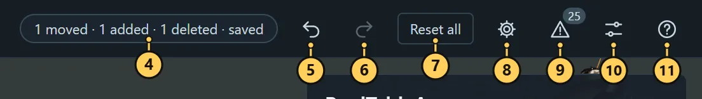
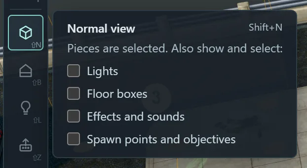
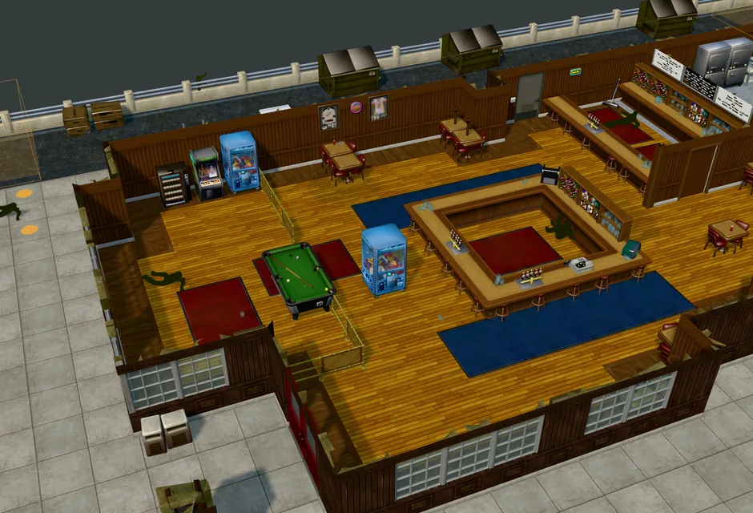
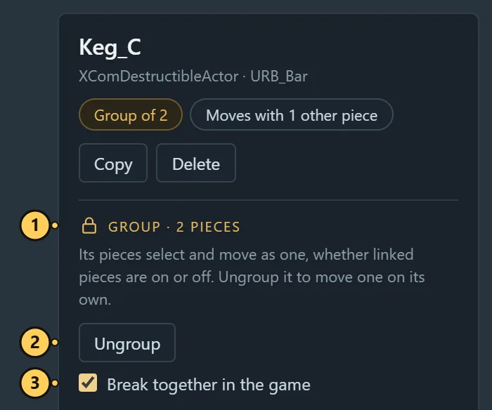
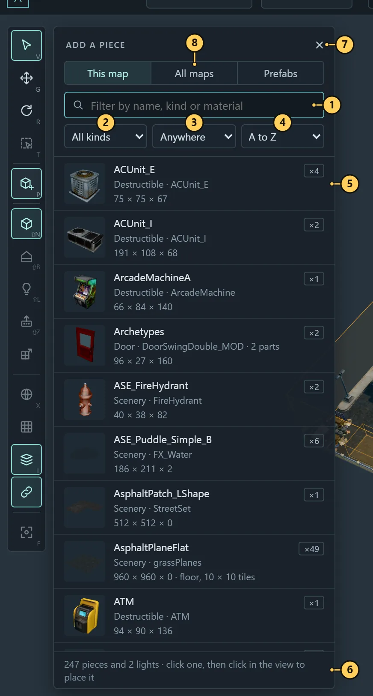
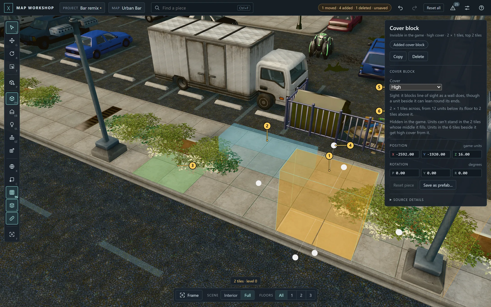
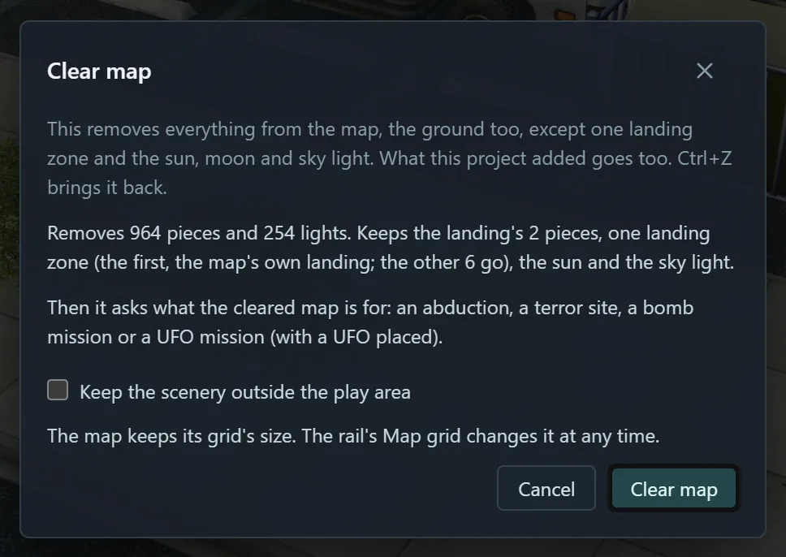
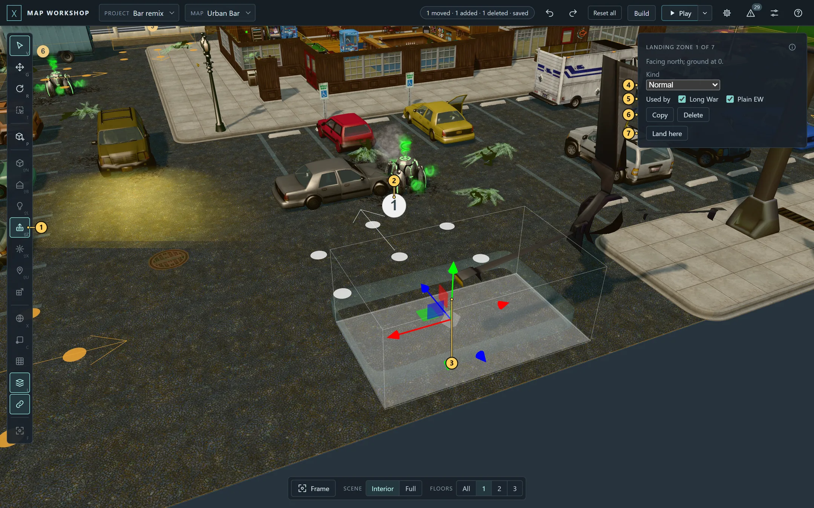
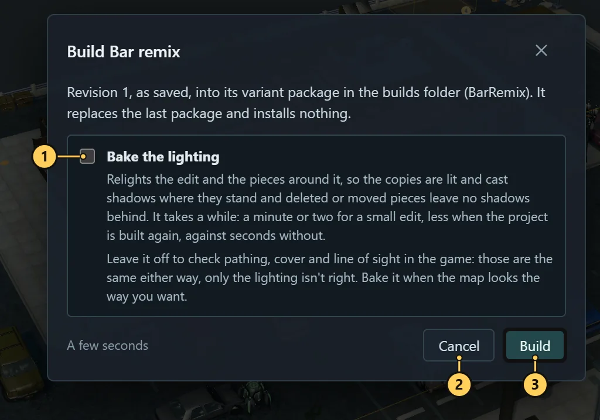

User guide
XCOM Map Workshop is a map editor for XCOM: Enemy Within. It opens one of the game's maps in your browser, lets you rearrange it, and builds the result into a new map the game plays like its own.
Preview release · for Long War Rebalance, and plain Enemy Within as a best guess
What it does
- Opens any map your game playsEvery map in your install's rotation (96 with Long War Rebalance, the tutorial's map included), in a 3D view you can orbit, cut open floor by floor and search.
- Rearranges what is thereMove, turn, copy and delete the map's pieces: props, cars, walls, floors, doors, ladders. Add more of any piece the map has, or pieces from the game's other maps. Edit its lights. Save a set of pieces, or a whole building, as a prefab and place it in any map.
- Makes room for a map of your ownClear a map down to its light and its landing, set the size of its tile grid, give your buildings their cutaway, and say where the squad lands.
- Builds a new mapYour edits are saved as a project and built into a variant: a copy of the map with the changes made in it, cover and pathing included, its lighting baked on request.
- Starts the game on itOne menu item starts XCOM straight in a battle on your variant, with a test squad: no campaign to start, and nothing of the game's own changed. Another takes the variant back out.
The editor runs only on your computer. It reads your own game install and contains nothing from the game; nothing goes into the game until you install a map from the Project menu.
New in this version
What has been added since version 0.4.1, each with the section that explains it: first what 0.5.2 adds, then 0.5.1 and 0.5.0.
| New in 0.5.2 | What it is |
|---|---|
| The mission you pick | Play in game plays the mission the header's Mission picker shows, not always an abduction, and says how far that kind is known to work. |
| Missions… | Which of the base map's missions a project is for, and missions a map can be given by its record (abduction, terror, a council bomb, a UFO). Clear map asks what the map is for. |
| A mission's objects | View options' Mission objects marks what the picked mission adds. Move one with its group, and the Build warns when an edit takes the floor from under one. |
| Enable saving | A test battle you can save and load: XCOM opens at its main menu and F5 starts the battle. |
| Cover blocks of any size | Sized with the dots on their faces. The panel says what the game makes of a block smaller than a tile and what it does to line of sight. |
| Blockers | A cover block with Cover None stops units walking there without giving cover. |
| Camera speeds and the centre pivot | Sliders for moving and turning speed in View options, and a Pivot button (C) on the tool strip to move and turn about the selection's centre. |
| New in 0.5.1 | What it is |
|---|---|
| Cache everything | The Project menu reads every piece of the game's maps ahead of use, and every map if you ask, with a progress bar you can cancel. |
| 30 levels | Maps, prefabs and their test stage go up to 30 levels high, where 18 was the limit. Over 18 has not been played. |
| The builder's Problems chip | What Test in game would say of a prefab, without building it. |
| More is built | A piece the Build can't make is left out and listed, and the rest of the map is built. Pieces of a kind not tried before are built with a warning. Prefabs that are too big or hold odd light values are warned of, not refused. |
| A faster editor | A large prefab opens in about a second instead of twenty, edits and pastes with many pieces are several times quicker, and slow steps show a bar. |
| New in 0.5.0 | What it is |
|---|---|
| Pieces from other maps | The piece list's All maps: any piece of any map in your install, placed in the map you are editing. Favourites and recently used pieces are kept. |
| Prefabs | A set of pieces, or a whole building with its lights, saved to be placed again in any map and passed on as a file. The prefab builder makes one from nothing, and Test in game plays it on a blank stage. |
| Buildings | The Buildings view: floor boxes drawn over a building so its roof hides and its walls cut down in the game. The map's own buildings can be changed the same way. |
| Clear map | Takes every piece off a map, to build a new one on its light and landing. |
| Map grid | The play area resized by handles: larger and taller on any map, and any size once it is cleared. |
| Landing zones | Where the squad lands, moved, turned, added and deleted in a view of their own, for Long War and for plain Enemy Within. Land here plays a zone. |
| Box select | A box drawn over the ground selects everything inside it. |
| Four views | Normal, Buildings, Lights and Landing zones: each selects its own kind of thing only. The Normal view can show lights and floor boxes beside the pieces. |
| Groups in groups | A group can hold other groups, and lights and buildings too, so a house moves with its lamps and its floor boxes. |
| Cover blocks that break | A cover block grouped with a breakable piece goes when the piece is destroyed. |
| A copy by dragging | Hold Shift as you take a move handle to drag a copy. |
| What builds | Doors without a frame build now. A ladder that isn't expected to climb is warned of and built, where it used to stop the build. |
Most of these have been played in the game on one or two maps. The ones that have not are listed under In the game: known limits.
What it can't do yet
This is a preview. Before you plan a map around it, these are the things it does not do.
Maps and pieces
- A new map starts from one of the game's. Clear map empties it, and you build on its light, sky and landing. The sun, the time of day and the mission stay the base map's.
- Only the game's own pieces. Any piece of any map in your install can be placed, but you can't import your own models, textures or sounds.
- Move and turn only. No resizing or reshaping, and no changing a piece's material or colour (a light's colour can be changed).
- No ground sculpting. The ground is made of pieces like everything else: you can move, copy and delete them, not reshape them.
- Only the maps your install plays. Maps the game's files hold but its map list leaves out aren't offered.
Missions and gameplay
- No mission scripting. Objectives, where the aliens start, timers and reinforcements stay as the base map has them. Where your squad lands can be changed: landing zones.
- Pieces the mission script uses are best left where they are. A piece marked Mission script, moved or deleted, builds, but the script goes on acting on the original; one of the landing's own pieces, moved or deleted as a piece, breaks Long War's landing. The Build warns of both. Move the landing zone instead.
- Long War Rebalance's invisible cover and blockers can't be edited. They show for reference. A mission's own objects (a bomb, the data recovery's capture points) can be moved, but not copied or deleted: what a mission adds. Under Long War the bomb and its power nodes go where its bomb rules put them, whatever you do.
- Cover, pathing and line of sight aren't shown or set by hand. The game works them out from the pieces when the map loads. The editor's tile grid is a guide, not the game's answer.
- No play-testing in the editor. No units, no fog of war, no destruction. You test in the game.
- Only abductions have been played from the rotation. Manage projects puts builds into campaigns, beside the original maps or in their place; maps that serve other missions install too, with a warning.
- No campaign in a test battle. Play in game starts the mission you pick, with a fixed squad of six
squaddies and four Sectoid pods (EXALT pods on EXALT's missions), not your campaign's soldiers. The battle
starts by itself and can't be saved.
Tick Enable saving in the play window (and in Build and test, and in the tab on a finished build's Play
in game button, whose words show when you point at it) to save and load in it: XCOM then opens at its main menu, and F5 there starts the battle; Exit to
Main Menu and F5 starts it again. Its saves go to new slots, never over a campaign's. Without it, a save never
finishes and the broken file is moved out of the game's list once the game closes (into the install's
XCOM Map Workshop\broken saves), and a campaign save it replaced is put back. The abduction, terror site, council bomb and rescue, crashed UFO, base defence, alien base, Confounding Light and data recovery have been played this way; UFOs and alien bases come without their commander. Under Long War the EXALT missions (data recovery, covert extraction, the EXALT raid) always have saving on, because Long War saves and reloads them as they start. The play window says how far each kind is known to work.
Building
- Some pieces are surest on the grid: ladders, doors, cars, vans, walls, storey floors and roof slabs build exactly by whole tiles and quarter turns from where their originals stand. Off that grid they build with a warning, and how they play there hasn't been tried. More
- A ladder needs floor at both ends where you put it, or the Build warns that it isn't expected to climb.
- The Build warns far more often than it refuses. A warning means "this may behave oddly in the game", and the map is built all the same. That includes pieces of a kind the Build has not made before (marked Untried), a single part of a car or a door edited on its own, and pieces of other maps the library used to hold back. A piece the Build can't make at all is left out and listed in the build window, and the rest is built. The prefab test does the same and waits for Launch test when it left something out.
- Some lights are view only: the sun, moon and sky, the glow of lit surfaces, and lights the map's scripts or a breakable piece switch. New lights are point or spot lights.
- Light edits need a baked build. A quick build makes them without their lighting.
- One build at a time, and a baked build takes minutes.
The view
- It is not the game's picture. Colours and lighting are approximate, most lights cast no shadows, and there is no fog, sky, particles, decals or animation. Doors stand closed.
- No preview of the baked lighting. Only the game shows what a build's lighting looks like.
The program
- Windows 10 or 11 only, 64-bit, for one person on one computer.
- Tried with Long War Rebalance. Plain Enemy Within is a best guess, and Long War without Rebalance hasn't been tried.
- Few maps have been played after editing. Any map opens and builds; most builds haven't been tried in the game yet.
- Projects may not open in the next version. Builds you made keep playing.
- It installs only while the game is closed. Play in game starts XCOM itself, through Steam.
Things to expect in the game from a variant are under In the game: known limits.
Getting started
What you need
- Windows 10 or 11, 64-bit, and a browser: Edge, Chrome or Firefox.
- XCOM: Enemy Within with Long War Rebalance. Plain Enemy Within should work too, but hasn't been tried.
- Free disk space: each map you open is kept (about 50 to 200 MB each) in
Documents\XCOM Map Workshop\cache.
Everything else comes with the editor. It needs no internet connection and no Unreal tools.
Installing and starting
- Run XCOM-Map-Workshop-<version>-Setup.exe. The installer isn't signed yet: if Windows says "Windows protected your PC", choose More info, then Run anyway.
- Follow its pages. The one that matters is Your XCOM: Enemy Within game: the game folder, the one that
holds
XEW, usually...\steamapps\common\XCom-Enemy-Unknown. Setup fills it in when it finds the game in Steam, and says whether it is Long War Rebalance or plain Enemy Within. - Start XCOM Map Workshop from the Start menu or the desktop shortcut. A small console window opens, then the
editor in your browser at
http://127.0.0.1:8768/. - Keep the console window open while you work. Closing it stops the editor.
From the zip instead: unpack it anywhere and run XCOM Map Workshop.cmd. The first start asks for the game folder in the browser.
The first time you open a map, the editor reads it from the game, which takes about half a minute. After that it opens at once.
The window
The 3D view fills the window. Everything else floats over it, and most of it appears only when it is needed: the piece panel with a selection, the undo buttons once something has changed.

- Header: the project, the map, the search, and on the right what has changed, undo, and three menus. More
- Tool strip: select, move, rotate, add, buildings, lights, and how pieces snap. More
- The view: the map. The coloured arrows on the selected piece are the Move tool's handles. More
- Piece panel: what is selected, with Copy, Delete and its exact position. More
- Bottom bar: frame the view, play area or everything, and which floor to cut down to. More
- Tile readout: how many tiles the selected piece covers, and its level. More
Header

- Project shows the open project's name (a dot after it means unsaved changes) and opens the Project menu: save, build, install, load.
- Map shows the base map and opens the map browser (M).
- Find a piece (Ctrl+F): type part of a name. The list shows each match with how many linked pieces move with it. Arrow keys choose, Enter or a click selects the piece and frames it, and Ctrl or Shift adds it to the selection.
On a map that serves more than one mission, a Mission picker shows between Map and the search. It chooses which mission's extra objects are shown (see what a mission adds) and which mission Play in game plays. With a project open it lists the project's missions, the kinds the project adds marked (added).

- What has changed: how many pieces are moved, added and deleted, how many lights and buildings are edited, a resized grid and changed landing zones, and whether that is saved: "not saved" with no project, then "unsaved" or "saved".
- Undo (Ctrl+Z).
- Redo (Ctrl+Y).
- Reset all puts the whole map back to the original: added pieces go, deleted ones return, moved ones go home, groups end, your buildings go and the map's own are restored, and the grid, the landing zones and a clear are undone. It is one undo step, so Undo brings your edits back.
- Import notes: what the editor couldn't read exactly from the map (a material drawn in an approximate colour, say), with their count. They are about the picture, not about your edits.
- View options: lighting, light markers, tile grid and more. More
- Controls and shortcuts: a short list of every key, the editor's version, and a link to this guide.
Items 4 to 7 show once something has changed.
Tool strip

- Select (V): click pieces without any handles in the way.
- Move (G): arrows on the selection. Drag an arrow to move along it, or a small square between two arrows to slide across a plane.
- Rotate (R): rings on the selection. Drag a ring to turn about its axis.
- Box select (T): draw a box around many pieces to select them all at once. More
- Add (P) opens the piece list, to place more of any piece the map has, a piece of another map, or a new light.
- Normal view (Shift+N): pieces are selected. It is one of four views, with the next three; one is on at a time. Hover it for its two switches, Lights and Floor boxes.
- Buildings view (Shift+B), where a building's floor boxes are drawn and fitted. While it is on, only boxes can be selected. More
- Lights view (Shift+L) shows the map's lights as markers you can select and edit. While it is on, only lights can be selected. More
- Landing zones view (Shift+Z): only landing zones are selected, drawn over everything. More
- Map grid: the play area's handles, to make the map's tile grid larger. More
- Axes (X): the handles follow the world's axes, or the piece's own (useful for a piece that stands at an angle).
- Pivot (C): where the handles sit, and what the selection turns about. At first, the piece's own origin, usually one of its corners, so a turned piece swings round that corner. Lit, the middle of the selection, so a piece turns in place. With snap at 96, the middle keeps to the nearest tile centre or corner, so pieces on the tiles stay on them (a piece one tile by two still moves half a tile when turned). A typed turn in the piece panel turns about the same point.
- Snap cycles through three settings; the button's corner shows which. Off; 24, steps of 24 units and 15°; 96, whole tiles (96 across, 64 up) and quarter turns, counted from where the piece stood. The corner shows R when the selection is a piece that only moves on the grid.
- Level snap (L, on at first): floor pieces keep to whole levels when placed and when moved up or down. More
- Linked pieces (on at first): moving a piece also moves what was placed with it. Turn it off to move one piece of a set. A car's parts, a van's, and a door with its frame always move together.
- Frame the selection (F, or double-click a piece): the camera goes to it.
A lit button with an outline is on. Hover any button for a reminder of what it does.
The views, and the Normal view's switches

Buttons 6 to 9 choose what a click selects: pieces in the Normal view, only floor boxes in the Buildings view, only lights in the Lights view, only landing zones in the Landing zones view. Pressing the view that is on, or Shift+N, goes back to the normal view.
Hover the Normal view button for two switches. They let the normal view show and select more than pieces, so a house can be handled with its lamps and its building in one go:
- Lights: the lights are drawn and can be clicked, moved, copied and deleted with pieces. A light's colour, radius and cones are still set in the Lights view.
- Floor boxes: your buildings' boxes are drawn, and a building is selected whole, by a click on a box's edge.
Both are off whenever a map opens.
The view and the camera
| To | Do this |
|---|---|
| Orbit | Drag with the left button. With Keys move along the view ticked, the drag looks round instead: the camera stays where it is and only turns and tilts |
| Pan | Drag with the right button, or hold W A S D or the arrow keys (Shift moves faster) |
| Move along the view | Tick Keys move along the view in View options: then W and S (Up and Down) move forward and back the way the camera faces, climbing or descending with its tilt, and A and D (Left and Right) sideways |
| Turn | Hold Q or E to turn the view left or right (Shift: faster). The camera circles the point it looks at, or with Keys move along the view, turns where it stands |
| Change the camera's speed | The three sliders under Camera in View options: moving, turning with the keys, and turning with a drag |
| Zoom | Scroll |
| Go to a piece | Double-click it, or select it and press F |
| See the whole map again | Frame in the bottom bar |
| Select | Click a piece. Ctrl or Shift+click adds one to the selection, or takes it out |
| Clear the selection | Esc |
- The handles' colours: red is the game's X, blue is its Y, and green is up (Z). The piece panel uses the same letters.
- The tile grid shows only around the selected piece, or the piece being placed. The game's tiles are 96
units across and 64 up.
- Filled tiles are the ones the piece reaches well into; outlined ones it only touches at the edge.
- Tiles turn blue when the piece floats above the floor under it. A floating piece may give no cover.
- The readout above the bottom bar counts them: "2 tiles + 10 at the edge · level 0".
- While you drag a handle, a hint says what is moving. Esc cancels the drag.
- Hold Shift as you take a move handle (an arrow or a plane square) to drag a copy along it. The original stays where it is.
Bottom bar and floors

- Frame fits the whole view in the window: the play area in Interior, everything in Full.
- Scene: Interior shows the area the game plays on; Full adds the backdrop around it (distant buildings, the street beyond the edge). Interior draws a piece that reaches into the area whole, a car across the edge included, unless it stretches more than four tiles past it.
- Floors: All shows buildings whole, roofs closed. A number cuts every building down to that floor, so you can see and edit inside. It is also the Floor picker: with a floor chosen, a floor piece you place goes to that floor's height.


Each part of the bar shows only on maps where it applies: a map with no buildings has no Floors.
Piece panel
The panel on the right appears when something is selected.

- What it is: the piece's name, its kind and its map, then chips with what you should know about it (listed below).
- Copy (Ctrl+C) and Delete (Del). After Copy, Ctrl+V shows the copy at the cursor and a click places it. Beside them, Select all of a kind.
- Position in game units. Type a value and press Enter.
- Rotation in degrees: pitch, yaw (the turn about the vertical) and roll.
- Reset piece puts the selected pieces back where the map has them. Save as prefab… saves what is selected as a prefab.
- Source details unfolds the piece's records: its actor and mesh, whether it can be destroyed and its health, which building floor it belongs to, and what moves with it.
- Copy full paths copies the actor, mesh and material paths, for a bug report or for your own notes.
The chips
| Chip | What it means |
|---|---|
| Moves with 2 other pieces | Linked pieces: they were placed together and move together (a car's body and glass). |
| Added copy | A piece you added. Source details names the piece it copies. |
| Recipe snap | It moves only by whole tiles and quarter turns. Why |
| Group of 2 | It is in a group. |
| Glows · 3 lights | A glowing piece: its glow lights the map, and moves, copies and goes with it. |
| Carries an effect | A particle effect stands on it, such as a Skyranger's lights or a claw machine's. The Build moves, copies and deletes it with the piece. The editor doesn't show effects yet. |
| Mission loot · Not loot | A collectible such as a UFO power core. A copy breaks like the original, but the game doesn't count it as loot. |
| Untried | A kind of piece the Build has not made before. The editor warns when you edit one; the Build makes it all the same, and leaves it out (named in its window) only if it can't. |
| Mission script | The map's mission script uses this piece. Moved or deleted, the script still acts on the original, not on the copy: the Build warns. |
| Landing zone | One of the pieces Long War spawns the dropship's landing from. Moved or deleted, the landing breaks: the Build warns. A copy is an ordinary piece. |
| A package's name | The piece comes from a mission or from Long War Rebalance's patch, not from the map. It can be looked at, not edited. |
| Flags | One of its flags is off, or you changed one. |
Flags
The Flags group says what the game does with the piece, and lets you change it: a wall that units walk and see through, a sign the mouse never picks, a fence that gives no cover.
| Flag | When it is on |
|---|---|
| Blocks walking | Units can't walk through the piece: the game's pathing counts it. |
| Gives cover | A unit beside it can take cover behind it. |
| Blocks sight | Units can't see through it. |
| Floor | Units can stand on it. Off, the game finds no floor on it: they walk under or through it. |
| Mouse picks it | The cursor stops on it, as on a roof. Off, it looks through to what is behind: handy for a canopy or a sign over a street. |
- A click changes the flag for every piece you picked (not the linked pieces they move with: the group says so when there are some). It turns it on where some have it off, and off when all have it on. It is one undo step, and the edit count says how many pieces have flags changed. Reset flags puts the map's back.
- What a row says. Each row shows on, off, partly on or mixed (picked pieces that differ), and what limits it. A row is greyed, with the reason, where the game never reads that flag for such a piece: a plain static mesh has only Floor, a door's mouse is its own, a ladder gives no cover by the game's usual test.
- Partly on is a prop the map set to be skipped by the pathing sweep: its tiles are still blocked where it stands, but walking and sight through it are not tested. Turning Gives cover or Blocks sight on opens that, and can change another row; the group then asks what that row should be before it changes anything.
- Copies keep them. A copy, a pasted piece and a prefab carry the flags; a move keeps them; a delete and its undo keep them.
- The Build writes them on the piece itself and reads them back, and works the tiles out again around a piece whose walking, cover, sight or floor changed (the mouse alone needs none). Flags alone need no new lighting, so a project with only flags is built without relighting. A floor taken from under a ladder's end, or from the tiles a landing or a mission needs, is warned of.
- What they don't do. A flag is a setting the game reads; it doesn't change the piece's collision. A piece that collides with nothing is touched by no trace whatever its flags say (the panel says so), and whether shots pass through a piece with Blocks sight off has not been tried. A door's blocking also follows whether it is open or shut. None of this has been played in the game yet: please report how it plays.
Select all of a kind
Select all TV_BarRow (5), beside Copy and Delete, selects every piece drawn with the same mesh as the picked one, so you can change all of a kind at once, their flags for one. Shift+click adds them to the selection. With a box drawn, it takes only those whose middle is inside the box. Hidden and deleted pieces, a mission's or Long War Rebalance's pieces, cover blocks, lights and floor boxes are left out. Selecting changes nothing in the project and is not an undo step.
Box select
To select many pieces at once, a whole house for one, draw a box around them.

- Box select in the tool strip (T) arms the tool: the cursor becomes a cross. Press on the ground at one corner of what you want, and drag to the opposite corner.
- The box. It starts a little under the ground you drew on and reaches up to the top of the map's grid. The pieces it would take are outlined in white, and follow as you change it.
- A white dot on each of its six sides: drag one to stretch that side. Pull the top down to take one storey only.
- The dot in the middle: drag it to move the box over the ground.
- The bar says how many pieces are inside. Select (Enter) makes them the selection. Add to selection (Shift+Enter) keeps what was selected as well. Draw again starts a new box, and Cancel (Esc) puts it away.
- A piece is inside when its middle is. A wall that sticks out of the box a little is still taken; a neighbour's wall that pokes in is not. Check the white outlines before you select.
- A group comes whole when any of its pieces is inside, and so does a set of linked pieces, as with a click.
- Lights and buildings are taken when they are shown. With the Normal view's Lights switch on, the lights inside are taken with the pieces; in the Lights view, only lights are. With its Floor boxes switch on, a building, yours or the map's, is taken whole when the middle of one of its boxes is inside. The bar counts them.
- Only what is drawn is taken. With a floor chosen in the Floors buttons, the hidden floors above are left out. Pieces of a mission or of Long War Rebalance's patch are never taken.
- For an outline a box doesn't fit, an L-shaped house for one: select one part, draw again over the other, and use Add to selection.
- The box is only a tool: it is not saved with the project, and making or changing it is not an undo step.
- With a box drawn, Select all of a kind takes only the pieces of that kind inside it.
Groups and Align
With two or more pieces selected, the piece panel gains two sections.

- The group. Group (Ctrl+G) joins the selected pieces. A group selects and moves as one: picking any of its pieces picks them all. It shows in gold.
- Ungroup (Ctrl+Shift+G) ends the group: its pieces are separate again. To move one piece of a group on its own, ungroup, move it, and group them again.
- Break together in the game: when one of the group's breakable pieces is damaged or destroyed, the others are too. Use it for a cover piece made of two, so it can't be left half standing. A cover block in the group goes when one of those pieces is destroyed. Grouping is the editor's alone; this option is what reaches the game.
Groups inside groups
A group can hold other groups. Group a table and its chairs, group a counter and its stools, then group the two as a room: each stays a group of its own inside the room.
- To make one: select pieces and whole groups together (a click on any piece of a group picks the group), then Group (Ctrl+G). The groups are kept as they are inside the new one.
- A click picks the outermost group the piece is in. The panel says how many pieces it has and how many groups are inside.
- Ungroup works one level at a time, from the outside in. Ungroup the room and the table group and the counter group are there again, each selecting as one. Ungroup one of those to reach its pieces.
- Copy and paste copy the whole tree: the copy has the same groups inside it.
- Break together is each group's own option, over the pieces it holds itself. The groups inside it break by their own.
Lights and buildings in a group
A group can also hold lights and buildings (yours or the map's), so a house keeps its lamps and its floor boxes when it is moved or copied.
- To add them: have them in the selection when you press Group. Lights are selected with the Normal view's Lights switch on; a building with its Floor boxes switch on (more). Box select takes all three at once.
- They follow the group even when they are not drawn. Pick any piece of the group and its lights and floor boxes move, turn, copy and are deleted with it, with both switches off too. (In the Lights view and the Buildings view each light and each box is on its own.)
- A group with a building moves by whole tiles and turns by quarter turns, whatever the snap, so the floor boxes stay on the tile grid.
- A copy of the group has its own lights and a new building with the same floors.
- Lights and buildings take no part in Break together.
- A cover block over a piece that can be destroyed: group the block with the piece and tick Break together in the game. When the piece is destroyed the block goes too, so no invisible wall is left. One breakable piece is enough, and nothing else destroys the block. An invisible floor stays.

- Target: the piece or group the others line up with. It is the last one you picked unless you choose another here. A white box marks it in the view.
- Axes and edge: tick any of X, Y (across the floor) and Z (up), choose what lines up (centres, low edges or high edges), then Align. The others move; nothing turns. It is one undo step.
- What will happen, in words.
Add: the piece list
Add (P) opens Add a piece. Under This map it lists one entry for each distinct piece the map has placed. It lists the original map, so a piece you deleted still has its entry. All maps lists the pieces of the game's other maps, and Prefabs the sets of pieces you have saved.

- Filter by name, kind or material.
- Kind uses the same categories in This map, All maps and the prefab builder. Floors finds flat pieces that carry saved floor tiles. Lights has point and spot lights. Invisible has cover blocks and invisible floors.
- Where: the play area or the backdrop, on maps that have a backdrop.
- Sort: A to Z, largest first, or most used.
- An entry: its picture, name, kind, and size in game units (width × depth × height); on the right, how many the map has. An entry is everything a copy would take along: a van is one entry of several parts.
- How many pieces and lights the list holds.
- Close (or P again).
- All maps: pieces from the game's other maps.
To place one: click an entry. A see-through preview follows the cursor. R turns it a quarter turn (Shift+R the other way). Click in the view to place it; Shift+click places it and keeps going. Esc stops. The new piece is selected, ready to move or turn.
Pieces from other maps
All maps lists the pieces of every map in the game install, so a lamp post from the Police Station or a wall from an alien ship can stand in the map you are editing. The first time, the editor reads the game's maps (Read the game's maps: about half a minute, once; nothing in the game is changed). After that each piece is read from the game the first time you use it; the Project menu's Cache everything… reads them all at once instead.

- All maps, beside This map. The editor remembers which one you used last.
- Filter by name, kind, material or the name of a map.
- Kind, map and sort: the middle menu keeps only the pieces placed in one map. Sort A to Z, largest first, most used, in most maps, or recently used.
- Can be placed keeps the pieces the Build can bring into another map today: scenery, props that break, walls and floors that break, doors, cars, vans, ladders, collectibles and bodies. A car, a van or a door with its frame is one entry and is placed as one; a van brings the room inside its box. Untick it to see the rest, greyed, each saying why not: mostly helpers that are hidden in their own maps. Not in this map leaves out what this map has itself. Favourites shows only the starred pieces.
- An entry: its picture, name, kind, size, and the map it comes from (or in how many maps it stands). Here marks a piece this map has too.
- The star makes it a favourite. Favourites and recently used pieces are kept with your settings, for every map and project.
- How many pieces match.
Placing one works as from This map: click it, then click in the view. The piece panel shows the map it is from. A piece that keeps to the tiles (a wall, a door) snaps to this map's tiles as it stood on its own map's. A ladder needs floor at its foot and at its top, as a copy of one of the map's own does; put it on an outer wall with nothing standing at its foot. The Build copies the piece into your map with the meshes, materials and textures it needs, so the built map grows a little (the entry's tooltip says by how much at most).
Lighting. Built with Bake the lighting, a piece from another map is lit for where it stands, and the pieces around it take its shadow. Built without, it keeps the light it had in its home map, so it can look too dark or too bright where you put it.
Cover blocks and invisible floors
Two pieces the game never draws, both under Kind: Invisible in the piece list. A cover block adds cover and blocks movement where the map has nothing to do it, as Long War's own map patches do (or, with Cover set to None, only blocks movement). An invisible floor is something to stand on where the map has no floor. Both work on plain Enemy Within too.

- A high cover block: full cover for a unit beside it, and it blocks sight.
- A low cover block: half cover, and units see over it.
- An invisible floor: a thin plate with its top at the height you place it at.
- Its handles: drag a white dot to move that face (four sides, the top and the bottom) and size the block.
- Cover: high, low, or none (a blocker), and under it what the block does to line of sight: a high block stops it as a wall does (a unit beside it can still lean round its ends), units see over low cover and through a blocker.
- Its size and what it will do where it stands, in words.
To place a cover block: press P, choose Kind: Invisible, pick Cover block and click its first tile; with tile snap on it stays on the tiles. It starts as one tile of high cover, one tile tall. Size it with its handles and set its cover in the piece panel. Turn it with R; with snap off, the turn handles can also tip it onto its side.
To size a block: select it and drag one of its white dots. Each moves one face along the block's own axes: its four sides, its top and its bottom. The snap setting on the rail sets the steps:
- 96: whole tiles across, and whole tiles up from its first top (96 units over the floor for high cover, 84 for low), as Long War's own blocks stand.
- 24: steps of 24 units.
- Off: smooth, to the unit.
A drag on a low side (−X, −Y) moves the block's corner, so the far side stays where it is. Esc during the drag puts it back, and each drag is one undo step. A block can be 8 units to 16 tiles across, and its bottom can leave the floor.
A block smaller than a tile does what the game's tile rules make of it. The panel says which, for where it stands. Read from the game's code and not played yet:
- One that fills the middle of a tile stops units standing in it.
- One across the line between two tiles' centres, 64 units over the floor, is a wall: units can't cross between those two tiles. A thin block along a tile edge does this, units stand on both sides of it, and both sides get its cover.
- The game looks for cover 44 to 60 units over the floor, along the lines through the tiles' centres. A block whose top is under 44, or one off those lines (in a tile's corner, say), gives none.
- One under 4 units through fills no tile, so on its own it gives no cover. It can still wall off a tile edge.
- Units can't walk through a block, and the units beside it get its cover. In the game you won't see it.
- Over a piece that can be destroyed, make the block break with it. A block alone is never destroyed, so a block over a car leaves an invisible wall when the car is gone. Group the block with the piece and tick Break together in the game: the block then goes when the piece is destroyed. One breakable piece is enough, and it can be one of the map's own, left where it stands.
- On a slope (a ramp, a hillside) the game gives no cover to a soldier standing on the sloped tiles, from a block or anything else: there a block only stops movement, and gives cover to soldiers on flat ground beside it.
To stop units walking somewhere without giving cover: place a cover block and set its Cover to None. It becomes a blocker (drawn purple): units can't walk into its tiles or stand on it, units beside it get no cover from it, and units see past it. It sizes, turns and breaks with a piece as any cover block. Not played in the game yet.
To place an invisible floor: pick Invisible floor in the same list. Size it with its four side handles, as a block, and set its height with the Z field. It carries the tiles whose centres it covers, since the game looks for a tile's floor at its centre; the piece panel counts them.
- Units only get onto it from somewhere they can already reach at that height, or by a ladder. A ladder counts an invisible floor as floor for its foot or its top.
- Placed from the list, its top goes just above the ground at the centre of its tile, which is where the game looks for a floor. The ground there is the game's collision, which can stand a few units above the ground you see, so a floor may look raised. The piece panel says how high it stands there, and Fit to ground puts it back just above the ground.
- Over a ramp, a floor makes the tile flat, so a soldier on it gets cover. A floor gives no cover itself, so the tile below it on a ramp doesn't get cover from it as from a step.
- It does not break. In a group that breaks together, an invisible floor stays.
Prefabs
A prefab is a set of pieces saved to be placed again as one thing: a barricade, a market stall, or a whole building with its lights. Prefabs are kept in a library of their own, apart from maps and projects, so one can be placed in any map and passed on as a file. They are listed under Prefabs in the piece list.

- Prefabs, beside This map and All maps.
- Filter by name, or by the name of a map its pieces come from.
- New opens an empty prefab builder.
- Save selection… saves what is selected in the view as a new prefab.
- Import… adds a prefab file someone passed on.
- A prefab: its picture, name, what it holds and the tiles it covers. Click it to place it.
- Edit, Rename, Duplicate, Export and Delete.
- How many prefabs the library holds. Hover it to see the folder they are kept in.
To save one: select what should be in it, then press Save as prefab… in the piece panel (or Save selection… here) and give it a name. Box select takes a whole building at once; with the Normal button's switches on it takes the lights and the building's floor boxes too. The window says what goes in, and lists anything that can't.
- What goes in: the map's own pieces and the ones you added (pieces from other maps too), cover blocks and invisible floors, lights, the groups among them, and buildings: your own, or the map's own, each saved as a building of the prefab.
- Lights are saved with all their values, so the prefab needs no light to copy from in the map it is placed in. A light's finer settings that the light panel doesn't show go back to the usual ones.
- Left out: pieces of the levels a mission streams in (they aren't the map's own).
- A name the library already has turns Save into Replace: the prefab is saved over the old one. What you placed from the old one stays as it is.
- Saving changes nothing in the map or the project.
To place one: click it in the list, then click in the view. R turns it a quarter turn before you click; Shift+click places it and keeps going. It arrives as one group, named after the prefab in the piece panel: it selects, moves, copies and deletes as one. Ungroup it to change single pieces; the groups it had inside stay groups. Placing is one undo step.
- What you place is a copy. Changing or deleting the prefab later changes nothing already placed, and a project doesn't need the prefab's file.
- By whole tiles. A prefab with a building in it, or with a wall, door, car, van or ladder, is placed by whole tiles, whole levels and quarter turns, whatever Snap says, so those pieces build as they should. Any other prefab goes where you click, as a piece does.
- In another map, its pieces are brought from their home maps, as pieces from other maps are. The first time, the editor reads them from the game, which takes a moment for a large prefab. A piece that can't be brought into another map is left out, and the message says which. One the library marks Untried is brought with a warning.
- Maps missing on a row means this game install lacks a source map. The editor looks for matching recipes when you place the prefab and warns about any pieces it leaves out.
- A building in a prefab placed where it overlaps another building builds, with a warning: a piece in both is listed by both.
- Lighting is as for pieces from other maps: build with Bake the lighting to light the prefab for where it stands.
Passing one on. Export saves the prefab as a small .json file. It holds the
names of the pieces, where they stand and any saved recipe keys. The recipient needs game maps with those pieces.
Import… adds such a file to your library. If the library already has
that prefab, the editor asks: Replace it saves the file over yours, Keep both
adds it beside yours with "(imported)" after its name. Delete moves a prefab's file to the
library's .workshop\deleted folder instead of erasing it.
The prefab builder
New in the Prefabs tab opens an empty workspace in the main editor. A row's Edit opens that prefab for editing, including imported prefabs and ones saved from a map selection. The map browser (M) also has a Prefabs group.
Add pieces from All maps, or place another prefab and use Ungroup to edit its pieces. Choose Lights for point and spot lights, or Invisible for cover blocks and invisible floors. The Buildings and Lights views, box select, nested groups, copy, paste and undo work as in a map. The ground grid grows with your work; it is a drawing guide and is never saved. Negative X and Y are fine.
Prefab → Save (Ctrl+S) saves everything, including lights and floor boxes hidden by the current view. Floor boxes alone can be saved. The first save asks for a name; later saves write the next revision. Save as… makes another prefab, or explicitly replaces a different one after confirmation, leaving the original unchanged. To update the one being edited, use Save.
The footprint and height appear at the bottom. Height 0 is the drawn grid. A map holds at most 128 by 128 tiles, and a tile grid 0 to 1,920 units high (30 levels), with up to 192 units sticking out under or over it: a hull or crater under the ground, a roof, floor boxes, lights. Out of the grid there are no tiles, so nothing there can be stood on or give cover; the readout says when something sticks out. The game's own maps are at most 18 levels (1,152 units) high: over that the readout says "not played", because nothing that tall has been tried in the game yet. Light influence radii do not count. The usual cursor storeys are guides; floor boxes can have other heights. A prefab larger than a map holds is saved and placed all the same, with a warning on the readout and on its card. Nothing is lifted automatically. A selection saved from a map keeps its height: the map's grid bottom becomes 0. A prefab placed where it reaches outside the map's grid is placed, with a notice saying how far it reaches out.
Under the readout, a Problems chip says what Test in game would say of the prefab as it stands, without building it: how many pieces would be left out and how many warnings there are. Click it for the list; a row selects its piece. It is checked when you open and save the prefab, and Check again brings it up to date after an edit.
The test stage's ground is hidden: it is still there to stand on, so what reaches under it shows, and the game draws its own tile grid under the cursor. A noon sky surrounds the stage, above and below. A test battle has no aliens.
Doors, ladders, cars, vans and fracturing pieces are meant to stand whole tiles and levels from where their originals stand. When one is off that grid, a warning over the size names it; it still builds and tests, and how it plays there has not been tried. Show selects it; Align to grid moves the whole prefab, lights and floor boxes too, the smallest distance that puts every such piece on the grid, in one undo step. Move it by whole levels afterwards to set its height: it stays aligned.
When you open a prefab with missing pieces, the builder looks for the same recipes in your local map catalogue and warns about pieces it still can't load. Matches keep their positions and links. You can undo the recovery or save the prefab with its new sources. Unresolved records stay in the document. After scanning or rescanning All maps, use Prefab → Find missing pieces to try again. Unsaved changes to an already saved prefab are kept for recovery and offered when you reopen it. Opening a map, project or prefab asks Save, Discard or Cancel first if there are changes. A failed or cancelled save keeps the current workspace open.
Glowing props, such as neon signs and lamps, carry their matched area lights when you move or copy them in a prefab. Quick builds keep those lights live, and baking adds their glow to nearby static surfaces.
Testing a prefab in game
In the builder, choose Prefab → Test in game. The dialog shows the prefab's dimensions and the game install that will open. Build and test uses the current contents, including unsaved edits or a prefab you haven't named. Bake the lighting is off by default, for a quicker check of appearance, movement, cover or cutaway; the stage has a neutral fill light either way. Tick it to see the prefab's shadows and the glow of its lights on nearby surfaces.

The battle starts on the blank stage with the prefab placed beside the squad. If the entire footprint leaves no room for the squad, or the editor can't resolve all the pieces, the progress window shows the problem. You can cancel preparation or building there. If you reload before the build launches, reopen the test and choose Launch test when it is ready. Close XCOM when you finish to restore the test install.
Lights
The map's placed lights can be edited as pieces are. The Lights view in the tool strip (Shift+L) shows them as markers: a bulb for a point light, a cone for a spot light, each in its light's colour. Grey markers are view only, hollow ones are switched off. While the view is on only lights can be selected, so a piece is never moved by accident; a light that is in a group moves on its own here. To handle lights together with pieces, use the Normal view's Lights switch instead.

- Lights view turns the view on and off. Click a marker to select its light. Move, turn, copy and delete it as you would a piece.
- Radius handle: drag the white dot to change how far the light reaches.
- Outer cone handle (spot lights): drag the dot on the left of the rim. Nothing is lit outside this cone.
- Inner cone handle: the smaller dot on the right. Inside this cone the light is at full brightness.
- Colour: the picker, or red, green and blue from 0 to 255.
- Brightness (0 to 100) and Radius in game units.
- Falloff (how fast it fades towards its radius: higher stays bright for longer, then drops) and, for a spot light, the inner and outer cones in degrees.
- On: unticked, the light stays in the map but lights nothing.
- What it lights: how many pieces the light is baked into, or reaches now that you changed it. A baked build relights those.
- Solo (O) dims the map and lights it with the selected lights alone, to see what they do.
- A typed value applies on Enter; Esc puts it back.
- New lights are in the piece list: Add, then Kind: Lights. Point Light and Spot Light are placed as pieces are. Each starts as a copy of one of the map's lights of that kind; on a map with none, the editor makes its own.
- To see your light edits on the map itself, choose Map lighting in View options.
- Glowing pieces (a lit sign, a screen) carry their glow with them. Sometimes the editor can't tell which piece a glow belongs to; its panel then says "May glow". Before moving such a piece, select the glow's light and choose Assign glowing piece (then click the piece) or Keep fixed.
- A view-only light's panel says why it can't be edited.
Buildings
To the game, a building is not its walls and roof. It is a set of invisible boxes laid over them, one or more for each floor. The boxes tell the game which pieces belong to which floor, and that is what lets you see inside:
- The roof and the upper floors hide when a soldier is inside, or when the cursor is.
- The walls cut down to low stubs, so the near wall doesn't block the view of the room.
The game's own maps have these boxes already. A piece you bring from another map comes without its building, and a house you put together from walls and a roof never had one. The Buildings view is where you give it one.
Without boxes
Pieces with no building around them are loose scenery. They stand, give cover, block sight and break as always, and soldiers walk in and climb as on any floor. What is missing is everything above: the roof never hides, an upper floor and its furniture stay drawn while you look at the ground floor, the walls stay at full height, and moving the cursor inside opens nothing up. A closed building without boxes can be played, but blind: the fight inside happens under a roof you can't see through. Fences, walls and ruins with no roof need no boxes.
The Buildings view
Buildings in the tool strip, between Add and Lights (Shift+B), turns the view on and off. While it is on, only boxes can be selected: a click on a wall picks the box around it, never the wall, so nothing of the building is moved by accident. Every building's boxes show in their floor's colour, the map's own as yours (The map's own buildings); only the few that stay as the map has them are grey.
Drawing a box

- Buildings in the tool strip turns the view on. The panel on the right appears, and pieces can no longer be selected.
- New box (N) arms the tool: the cursor becomes a cross.
- Press where one corner of the floor is…
- …and drag to the opposite corner. The box follows by whole tiles and stays see-through, so you can see what it takes in.
- The line at the top says its size in tiles and the height it starts at. Esc cancels.
Let go and the box is made, one storey (192 units) high, and selected. It starts at the level under the cursor: on the ground here, on a floor if you start the drag on one. With a floor chosen in the Floors buttons it starts at that floor's height. It joins the building of the box you selected last; with none, it starts a new building.
Fitting a box and making the next floor

- The top's handle: drag a white dot to stretch that face. The top and the bottom go to levels.
- A side's handle: a side goes to the tile lines. Hold Alt for steps of 8 units. Each dot stands off its face on a thin line, clear of the arrows.
- The Move tool's arrows move the whole box, by whole tiles and levels. A box is never turned.
- Bottom and Top: the heights the box runs between. They can be typed.
- Building and Floor: which building the box is a part of, and which of its floors (1 is the ground floor). New building in the list starts another.
- Name and Kind are the building's: a name for you, and whether it is a plain building or a UFO. What Kind changes
- What it takes in: how many pieces stand in the box, and how many of them cut down. Anything the Build would refuse is said here too.
- Copy and Delete (Ctrl+C, Del).
- A yellow line: where one of the cursor's floors starts over the box, with that floor's number and height. A storey's box should start at one. The cursor's floors
To add a floor above, select a box, copy it and paste (Ctrl+C, Ctrl+V): the copy lands on top of the original as the next floor of the same building, as in the picture. Then drag its top to where the roof ends. Move it from there if it belongs elsewhere.
- Boxes around the pieces selected: select a building's walls, floors and roof first, then turn the view on. The button makes a box for each floor around them.
- Undo and redo (Ctrl+Z, Ctrl+Y) work on boxes as on pieces.
- Several boxes can be selected with Ctrl or Shift+click; Building and Floor then set them all.
- A floor of any outline is several boxes with the same Building and Floor: two for an L-shaped house. Why not one big box
- The map's own buildings are edited the same way: see below. Grey boxes, a van's building among them, can be clicked and read, not changed.
- Done, or Shift+B again, leaves the view: pieces can be selected again.
With the view off, the Floors buttons cut your building down as they do the map's own, so you can check it: choose floor 1 and the roof should go and the walls drop.
Kind: Building or UFO
Leave Kind at Building for anything that is not the mission's alien ship: a house, a shed, a shop, and also a ship-shaped structure you only want as scenery.
What you see is the same for both kinds. A UFO's hull hides its roof and upper decks and cuts its walls down exactly as a house does, with the same boxes and the same rule.
UFO sets one mark on the building, the one the game's own crashed and landed ships carry. The only part of the game that reads it is the placing of the aliens at the start of a battle:
- the building's footprint is taken as where the ship is (for three of the ship types, a smaller area in its middle);
- groups of aliens can then be placed by it: inside the ship, or behind it as seen from where the squad lands.
So choose UFO only for the building that is the alien ship of a UFO mission, where the aliens should gather in and around it. On any other building the mark does no good, and it may put a mission's aliens around the wrong building.
How far this goes is not settled. It is read from the game's own scripts and has not been tried in a battle here; Long War Rebalance places its aliens by rules of its own, which may not look at the mark at all; and a working UFO mission needs more than this building (the ship's own doors, power source and mission objects), which the editor does not make yet.
Where a floor's box goes
Each floor's box starts at that storey's walking level and runs up to where the next storey's walking level begins. The boxes stack: the top of one is the bottom of the next. The reason is the game's rule for which floor a piece belongs to: a piece counts for a floor when it touches that floor's box and its bottom is more than 20 units under the box's top.
| Part of the box | Where to put it, and why |
|---|---|
| Bottom | At the walking level of the storey. The floor you stand on, and everything standing on it, is then in that storey's box. |
| Top | Just under whatever should hide: the roof, or the next storey's floor. That piece must start no lower than 20 units under the box's top, or it also counts for the floor below and stays drawn when you look inside. |
| Sides | On the lines the walls stand on, so the walls are inside. |
| The top storey | It needs a box too, tall enough to take in the roof. A roof with no box around it never hides. |
- Walls should cross from one box into the next. A wall that starts in the lower box and rises into the upper one is the kind that cuts down. A wall that stops short of the upper box is a ground-floor piece and stays at full height. Most wall pieces are made to cut down; a tall piece that isn't simply stays drawn until every floor it reaches is hidden.
- All the floors of one building must have the same Building. The game hides and cuts down floor by floor within one building: "the floors above the one the soldier is on". Two boxes stacked as two separate buildings are two one-floor buildings, each with only a ground floor: nothing is above anything, so the roof never hides and the walls never cut down. The Build does not refuse this (the boxes only touch), so check the Building and Floor of each box in the panel, and check the result with the Floors buttons.
- You need not be exact to the unit. The game's own maps have storeys with a small gap between their boxes, and others that overlap by a unit, and they work. The 20 units at the top are what decides where a roof or an upstairs floor lands.
- The ground under the building is listed on floor 1 with everything else that touches the box. That does no harm: the ground floor is never the one hidden.
- A few plain scenery pieces (the class StaticMeshActor) never hide in the game, whatever box they stand in.
The cursor's floors: the yellow lines
The game keeps a second set of invisible boxes, apart from any building: the map's cursor volumes. They say which floor a height is to the cursor, and so where the mouse wheel stops as you go up and down. Your floor boxes decide what is hidden; the cursor volumes decide where the cursor goes. The two have to agree, or the wheel and the cutaway fall out of step.
How the cursor's floors work in a battle: each cursor volume carries a floor number. Rolling the mouse wheel moves the cursor to the next number up or down among the volumes over where it stands, and a click on a deck counts as the floor of the volume that height falls in. A place with no cursor volume over it has a single floor.
In the Buildings view, each of your boxes has a yellow line round it at every height where a cursor floor starts over it. On the selected box each line carries the cursor floor's number and its height (2 · 192).
- Start each storey's box at a yellow line, or within 32 units of one. The panel says so when a box starts away from them, and the Build warns of it.
- A top or bottom dragged near a yellow line goes to it, also where the line is off the levels: on the Bar the second cursor floor starts at 210.
- The game's own maps have theirs, often four over the whole map, sometimes many small ones over single buildings. They are shown as they are and not changed.
- A map made from nothing has none. The Build gives it four over the whole map, 192 units each from the ground up: the lines at 0, 192, 384 and 576. So build in storeys of 192 there.
A map opened before this was added prepares again the first time it is opened: the cursor volumes are read with the rest of the map.
A building with its pieces: Floor boxes in the normal view
In the Buildings view only boxes can be selected. To handle a building together with its pieces, hover the Normal view button in the tool strip and tick Floor boxes: your buildings' boxes are then drawn in the normal view as well. It is off whenever a map opens.
- Click a box's edge to select its building. The sides are see-through to the mouse, so the pieces inside are still clicked as usual. Ctrl or Shift+click adds it to the pieces selected, and Box select takes it with them.
- A building is picked whole here: all its boxes, on every floor. Single boxes are the Buildings view's.
- It moves by whole tiles and levels, and turns by quarter turns, and so does everything selected with it.
- Copy and paste (with at least one piece selected too) make a new building with the same floors beside the copied pieces. Delete removes the building's boxes; the pieces stay unless they are selected too.
- The panel shows the building's name and kind, which can be changed. Stretching a box and changing its floor stay in the Buildings view.
- To keep them together for good, group the pieces and the building.
The map's own buildings
The map's own buildings are edited exactly as yours are. Their boxes show in their floors' colours; in the Buildings view each box can be moved, stretched, copied, pasted (a copy on top adds a floor) and deleted, and a box can be added to them; in the normal view, with Floor boxes on, a building is picked whole with its pieces, to move, turn, copy or delete, and it can be in a group.
- Only what you change is saved. A building you leave alone stays exactly as the map has it. One you change is edited in place by the Build: the map's own floor volumes are moved and stretched, new boxes added, the ones you deleted taken out, and a building you delete is taken out with its boxes (its pieces stay).
- Where nothing changed, the cutaway stays as the map's designers made it. For each piece the Build works out the rule (where it stands in the boxes) before and after your change; where the answer is the same, the piece keeps what the map saved, lists tuned by hand included, and a floor added below carries the ones above with it. A building moved whole with its pieces keeps all of its own. The piece panel's Floors line shows what the Build will list.
- Restore the map's puts a changed building back as the map has it, as one undo step: its button shows under a changed building's boxes, and the Buildings view lists every building of the map you changed or deleted, each with Restore (a deleted one has no box left to click). Reset all restores them too.
- Notched boxes: some of the map's floor volumes are not plain boxes but have notches or an L shape (the Bar's ground floor has several); the editor draws their outer box, and the panel says so. Moved, such a volume keeps its shape; stretched, the Build puts a plain box in its place, filling the notches.
- Grey boxes are the buildings that stay as the map has them: a van's own building (it goes with the van), and the rare one with a floor that has no box. They can be clicked and read; selected with their pieces and copied, the copy gets a building of your own with the same boxes.
- A copy of one of the map's buildings is a new building of yours with the same boxes, named after the original; saved into a prefab, likewise. A copied alien ship is a plain building until you set its Kind to UFO in the panel.
- Lights move with a building only when they are selected with it, as with any move. Emitters, decals and the like stay where they are.
Several boxes, or one big box
A floor that is not a rectangle (an L, a T, a house with a porch) is made of several boxes with the same Building and Floor. One larger box around the whole of it also builds, but the space it takes in beside the building counts as the building too:
- Everything in the box is part of that floor. A car, a tree, a lamp post or a neighbour's wall inside an upper floor's box hides along with the roof whenever someone is inside your building.
- Standing in the box counts as being inside. The roof would go while a soldier only stands in the yard beside the house. This is expected from how the game reads the boxes, and has not been tried in a battle here.
- Boxes of two buildings had better not overlap. It builds, with a warning: a piece in both is listed by both, so a generous box can make the building next door hide with yours.
So keep each box to the walls. A box that sticks out by part of a tile where nothing stands does no harm, and the ground floor is the forgiving one: it is never hidden, so extra pieces listed there change nothing you see. The panel's count of pieces in the box is a quick check: if it jumps when you stretch a side, the box has taken in something that is not the building's.
An example: a hut whose walls run from the ground to 256 and whose roof starts at 240. Floor 1's box from 0 to 176, floor 2's from 176 to 384. The walls reach into both, so they cut down; the roof starts well above 156 (20 under floor 1's top), so it is floor 2's alone and hides.
Map grid
The map's tile grid is the box the game plays in: the play area. Map grid on the left rail (or in the Project menu) shows the play area with a handle on each side that can move. Drag a handle to resize the grid. Click the button again, or press Esc, to put the handles away.

- Map grid on the tool strip.
- The red handle moves the far X side, by whole tiles.
- The blue handle moves the far Y side, by whole tiles.
- The green handle raises the top, by whole levels.
- The size, against the map's own.
- Lay the map's ground over the new area, shown on maps whose ground is laid as planes.
- The map's own size puts it back; Done puts the handles away.
- On a map as it is, the grid only grows. The red handle moves the far X side and the blue one the far Y
side, by whole tiles; the green one on top raises it by whole levels, up to 30 (over 18, the height of the
game's tallest maps, has not been played). The corner and the bottom stay
where they are. The new area is drawn as a faint sheet:
- green where the Build lays more of the map's ground there, on maps whose ground is laid as planes (the blank map's and Bar's are);
- grey where it lays none. Lay the map's ground over the new area, in the panel, chooses between the two.
- The map's scenery in the new area is made walkable. The ground and pavements a map is seen against beyond its play area are saved so the game ignores them: no floor. The Build turns that on for the low ones the grown grid takes in, so units walk on them as on the map's own ground, at whatever height they stand (the Farm's raised fields too). The map's ground is laid only where no such piece is. Taller scenery (the backdrop's buildings, a hill's mesh) stays as it is: no floor, no cover. Lay floors where there is none. A copy of such a ground piece placed in the grid is floor too.
- On a cleared map the grid can also shrink and get lower. The corner and the bottom stay where they are.
- Every drag is one undo step. The panel gives the size against the map's own and warns about landing zones the grid leaves out. The map's own size puts it back.
Clear map and landing zones
Clear map… in the Project menu takes every piece off the map, the ground too, so that you can build a new map with pieces and prefabs on an old map's light and landing. It is meant for an unchanged map, but it works on any.

- A window comes first. It warns what will go and counts it for this map: the pieces, the lights, and the
pieces the mission's script names. It also counts what stays:
- the landing's own pieces (the Skyranger's frame and the drop zone);
- one landing zone: the map's own first landing, used by Long War and plain EW alike (copy it for more);
- the sun or moon and the sky light.
- Keep the scenery outside the play area leaves the pieces that stand wholly outside it: the buildings, trees and fences the map is seen against. The lights, smoke and stains placed out there stay too. Here the play area is the map's own, and the new grid where it reaches further, so pieces the new grid brings into play still go. So does a piece across the edge. The window counts what stays. The tick is remembered.
- The clear is one undo step. Ctrl+Z brings everything back, the size too. What your project had added goes as well, with its groups and buildings.
- After a clear, Map grid can also make the grid smaller and lower.
- The Build takes out what the editor never showed on a cleared map: the missions' streamed pieces, the patch's helpers, the map's own floor storeys. It gives the new grid storeys of its own.
- A cleared map is for Long War Rebalance. On plain Enemy Within the aliens' pods and Meld still start where the map's buildings were, some over nothing. The window says so on a plain install.
- Then it asks "What is this map for?": the Missions window, with the header's mission ticked if it is an abduction, a terror site or a bomb, else an abduction. A base mission with objects of its own (a bomb, a data recovery) keeps them where the original map has them until you move them.
The ground grid
A faint grid on the ground's plane (the height the landing zones stand at), drawn only where there is no floor. On a map as it is you see it only over holes. On a cleared map it covers everything until you lay floors, which hide it where they lie. A piece placed over nothing lands on it. It is a View option, Ground grid, on at first.
Landing zones
Each landing zone is where the squad may land: the drop zone's frame, the evac zone, the six soldier tiles, an arrow the way the squad faces, and its number. The game picks one of a map's zones. They are drawn on every map (View options, Landing zones).

- Landing zones view on the tool strip (Shift+Z).
- The zone's number. Click it, or the zone, to pick the zone.
- The gizmo on the picked zone: arrows to move it, R for its ring.
- Kind: normal, or inside.
- Used by: Long War, plain EW, or both.
- Copy and Delete.
- Land here: play the build with the squad landing at this zone.
- Zones are edited in the Landing zones view (Shift+Z, or its button in the tool strip). There they are drawn over everything, even under a floor, and a click picks a zone, never a piece. In the normal view they are shown but not picked, and the landing's pieces are pieces.
- Click a zone in that view to pick it. A gizmo appears on its drop zone, and its panel opens: Kind (normal, or inside: the squad stands further back, inside the evac zone), Used by, Copy (Ctrl+D) and Delete (Delete).
- The gizmo moves and turns the zone only in the steps a landing zone takes:
- its arrows (G) move it by whole tiles across and whole levels up;
- R shows its ring, which turns it by quarter turns. [ and ] turn it too.
- To add one, choose Landing zones under Kind in the Add panel (P), then click the tile it is to stand on. The Landing zones view comes on.
- Maps whose landing has no drop zone (Basic Training, the Temple Ship, the alien bases) show it as a zone too, on the map's own soldier tiles. Moved, the squad stands in the usual six-tile layout at the new place.
- Used by says which game lands at the zone:
- Long War: Long War Rebalance picks among all the zones ticked for it.
- Plain EW: plain Enemy Within lands only at the map's own landings, and the Build moves them to the zones ticked for it. A map has only as many as it came with (Bar one, the Farm three), so only that many zones can be ticked. Ticking one more asks you to untick another first. At least one zone stays ticked: deleting the last one ticks the first zone left.
- The panel warns, without stopping you, about a soldier tile outside the grid or over no floor, a piece standing on one, and a zone that is played under Long War only or not at all.
- Land here, with a project open, plays its build in the game with the squad landing at the picked zone. It builds first when the build is not of what is on screen.
Until you change one, the zones are the map's original ones. The first change makes them the project's.
View options

- Lighting: Neutral is plain, even light, best for editing. Map uses the map's own lights, as edited; No area is the same without the glow of lit surfaces. Both are approximations of the game's lighting.
- Brightness of the view.
- Keys move along the view: W A S D and the arrow keys move the camera forward, back and sideways the way it faces, instead of panning across the map, and dragging looks round from where the camera stands instead of orbiting. More
- Move speed: how fast W A S D and the arrow keys move the camera, from a fifth of the usual speed to three times it (Shift still triples it).
- Key turn speed: how fast Q and E turn the camera.
- Drag turn speed: how fast a drag orbits, or looks round with Keys move along the view. The three speeds are kept on this computer; double-click a slider to put it back to ×1.
- Area lights: also show the lights that stand for glowing surfaces. View only.
- Outline the pieces a light reaches: for the selected light, in teal the pieces it is baked into, in orange the ones it reaches after your change.
- Sun, moon and sky: lists the lights that have no place. View only.
- Play area (B): faint amber walls round the area the game plays on, its level volume: units can't leave it.
- Tile grid around the selection.
- Floor tiles: where the game has floor, coloured by the piece that carries each tile. Hover a tile to name its piece; click to select it.
- Wireframe.
- Hide patch helpers: untick to see Long War Rebalance's invisible cover and blockers, as a wireframe. Shown only on maps that have them.
- Performance stats: a line of counts (pieces, triangles, draw calls).
Above Play area, on a whole map: Ground grid and Landing zones (more), and on a map whose missions have objects of their own, Mission objects (more).
Project menu
A project is your set of edits on one base map. Until you save one, edits are a trial that a reload loses (the browser asks first).

- The open project: its name, revision, when it was saved, the name its variant builds as, and its last build.
- Save (Ctrl+S) saves the next revision. With no project open, it asks for a name.
- Save as… saves what is on screen under a name: a new project, or in place of another.
- Build… (Ctrl+B) makes the project's variant. More
- Play in game starts XCOM in a battle on the project's build. With no project open, on the original open map, without edits. More
- Game maps… shows the game's map records and what the editor changed of them, and undoes it. More
- Map grid shows the play area's handles, as the tool strip's button does. More
- Clear map… takes every piece off the map. More
- Load… (Ctrl+O) opens a saved project, switching map if it is of another.
- Manage projects… lists every project with its last build, to install several in the game for campaigns or zip them into a map pack. More
- Close project goes back to the original map.
- Game install and checks… changes which game folder the editor reads, and lists what the editor needs with a tick or a remedy for each.
- Recent: the last three projects. Click one to open it.
- Installs: the game folder the editor reads, the one it plays in, how the game is started there, and what the editor has installed in it.
On a whole map the menu also has Clear map…, which takes every piece off it (more), Map grid, which shows the play area's handles to resize the grid (more), and Missions…, the missions the project is for.
Missions… lists the base map's missions and the kinds a map can be given by its record alone: an abduction, a terror site, a bomb mission (Long War only) and a crashed or landed UFO (once a UFO prefab stands on the map, with the UFO's type to choose). Tick the ones the project is for: the Build writes a map record for each, and the header's Mission picker and Play in game list them. Each line says how far that kind is known to work when played this way, and what it needs. A map that isn't cleared starts with all of its base map's missions; a cleared map is asked when it is cleared. The kinds the project adds have not been played yet. OK needs one ticked; the change is one undo step.
Manage projects… opens the project manager: every project with its last
build (when it was built, of which revision, whether its lighting is baked, and the editor version that built it)
and what is in the game of it. Type to filter, or pick a state under Show; tick projects one by
one, a run of them with Shift+click, or all that the filter shows (Ctrl+A). Then
choose how the ticked projects' last builds go into campaigns, as Additional maps in the rotation
beside the originals or to Replace the original maps, and either Install in the
game (with XCOM closed) or Zip as a map pack: one zip in the builds folder's
Map packs, with the files laid out as the game folder is, a README, and two scripts for whoever gets it:
Install.cmd puts the maps into their game (it asks for the game folder and keeps a copy of
DefaultMaps.ini first) and Uninstall.cmd takes them out again, neither needing the editor.
A row's Install as gives that project its own way, so one install or one pack can replace
some maps and add others. Replacing comments the original map's records out, so the game no longer uses it; for a council mission, which
asks for its map by name, your map takes the original's record name. Beside the original, a map is never picked for
a council mission (but a bomb mission under Long War, which makes an extra one of it). The manager warns, without
stopping you, about a build whose lighting is not baked, a build older than its project, and maps that serve
missions other than abductions: only abductions have been played with an edited map so far.
Game maps… opens a list of every map record in the game's DefaultMaps.ini, by
map: its mission, whether missions draw it from the rotation or ask for it by name, and what the editor did to it.
A record of the game's own has a tick: untick it and the game stops using it (its line is commented out), tick it
to bring it back. A record a project's build replaces says by which project, and stays off while it does. The
records the editor added are listed under their base map, each with Undo, which takes that build
out of the game's maps and brings back the map it replaced. Undo everything takes all of the
editor's back out, files included: the game's config files end exactly as they were. Type to filter, or pick under
Show (changed by the editor, in rotation, asked for by name, not in use);
Switch off the shown and Switch on the shown act on every record the filter
shows. Group by lists the records by map or by mission, to see which maps each kind of
mission draws from. All of it needs XCOM closed.
- Unsaved changes are kept for you. If the browser closes, reopening the project offers them back: Restore them or Discard them.
- Each save is a new revision, and the one before is kept as a backup beside it.
- Opening a project starts with an empty undo history.
Map browser
Map in the header (M) lists every map your install plays, in sections by mission type. A map that serves several types is listed under each.

- Search by the map's name, its package or a mission.
- Prepared only hides maps the editor hasn't read yet.
- Mission types: click one to show only its section.
- A map: its name, its package (the file's name in the game), and the missions it serves.
- Its state: Checked in game (the editor's work on this map has been checked in the game), Ready (already read: opens at once) or First open ≈ 30 s (the editor reads it from the game when you open it).
- How many maps match, and how many are ready.
- Open (or double-click a map, or Enter).
Build
Build… (Ctrl+B) saves the project if it has changes, then makes its variant:
the map with your edits made in it, in the editor folder's builds\<variant name>\. A build replaces the project's last one, and installs nothing.

- Bake the lighting, off each time the panel opens.
- Off (a quick build): seconds. Cover, pathing and line of sight in the game are right; the lighting around your changes isn't: copies are lit as their originals were, and moved or deleted pieces leave their shadows behind.
- On (a baked build): a minute or two for a small edit, less when the project is built again. The editor relights the map around your changes.
- Cancel (Esc) builds nothing. On its left, about how long the build will take, from the project's last build of that kind.
- Build (Enter). Opened from Play in game, this button reads Build and play, with Play last build beside it when the last build is of what is on screen.
While it builds, a window covers the editor and takes no clicks: the steps with their times, a bar for the step running, and the time so far. Show the log unfolds the build's own output, and Cancel the build stops it, leaving the last good build as it was. When it ends, the window shows the build's folder or why it failed, and Save a bug report. Click the folder's path to open it in Windows Explorer, or Copy the folder path. Once built, Play in game installs the build and starts XCOM in a battle on it, as the Project menu's does.
Warnings don't stop a build. They say what may behave oddly in the game: a piece off its grid, a ladder that isn't expected to climb, a floor box that starts away from the cursor's floors, a landing zone over no floor. The map is built all the same, and the build window lists them.
If the project holds an edit that can't be built at all, the build stops at once and says which piece and why. Undo that edit, or fix it as the message says, and build again.
Other windows
- Save as… and Load… open a list of your projects with each one's map, revision and when it was saved. Click a column head to sort. Type a name, or pick one; Enter or a double-click chooses. Saving under another project's name asks before replacing it. Show switches between this map's projects and all of them.
- Cache everything… (above Game install and checks… in the menu) reads every piece of the game's maps into the editor's cache now, so placing a piece of another map or opening a prefab never waits for it. Tick Every map, ready to open to prepare every map as well, which takes much longer. The window says how many there are, about how long it takes and how much disk space it needs. Start runs it in the background with a progress bar: you can keep working, close the window and open it again later. Cancel stops it at any moment; what was read so far stays, and Carry on picks up from there. What is already cached is left alone, and what a game update or a newer editor made out of date is read again.
- Game install and checks lists the game installs found in Steam, takes another folder typed in or picked with Browse…, and Use this install switches to it without a restart. Below, the editor's checks: each one is OK, or says what to do.
- Banners at the top of the view carry messages that need an answer, such as a project made on a different version of the map.
- A map that needs preparing again. When the editor's saved copy of a map is older than the editor needs, a box in the middle of the window says so as the map opens, and again if you ask for a build. Prepare now reads the map from the game again, in about half a minute, and opens it afresh; your projects are kept. Later leaves a banner with the same offer. A build that stopped for this reason has a Prepare the map button in its window.
Typical tasks
Make your first variant, start to finish
- Press M and open a map. Urban Bar is a good first one: builds of it have been played.
- Choose a floor number in the bottom bar's Floors to look inside a building.
- Click a piece, press G, and drag an arrow to move it.
- Press Ctrl+S and give the project a name.
- Press Ctrl+B, leave Bake the lighting off, and choose Build. It takes a few seconds.
- Close XCOM if it is running, and choose Play in game in the build window (or later in the Project menu, then Play last build).
- If XCOM's launcher opens, pick Enemy Within. The battle on your map starts by itself, with a test squad.
- When you are done, close XCOM: the editor then takes your map back out of the game by itself. Game maps…, Undo everything does it at once, if you ever need to.
Add cover to an open area
- Find a piece that gives the cover you want and select it: a dumpster, a planter, a car.
- Ctrl+C, then Ctrl+V. The copy follows the cursor.
- Press R to turn it, then click where it should stand. Shift+click places several.
- Check the tile grid: the filled tiles are the ones the piece occupies. Blue tiles mean it floats.
If the map has no such piece standing where you can click it, use Add (P) and pick it from the list. Keep new cover off the squad's landing area: the game may drop a soldier on it.
Rearrange a room
- Cut down to the room's floor with Floors.
- Set Snap to 96 to keep pieces on whole tiles, or 24 for finer steps.
- Move pieces with G and turn them with R. For an exact place, type the position or the yaw in the piece panel.
- To line several up, select them, pick the one to line up with last, and use Align.
- Delete what is in the way with Del.
Open or close a route
- Open a wall: select the wall section and delete it. Pictures and shelves hanging on it stay unless you delete them too.
- Add a door: copy an existing door. Its leaf and frame come together, and it lands on whole tiles in quarter turns. A door needs an opening: delete the wall section where it goes, or copy a wall section that already has a doorway.
- Add a way up: copy a ladder to where its foot and its top both meet floor. The Build warns of a ladder that isn't expected to climb, and builds it all the same.
- Block a route: copy a wall section, a van or a fence into the gap.
After a change like this, a quick build and a look in the game is the way to know how the game paths around it.
Work on an upper floor
- Choose the floor's number in Floors. The floors above are cut away.
- To extend the floor itself, open Add, choose Kind: Floors, and pick a floor piece.
- With Level snap on, the piece goes to the height of the floor chosen in Floors, however high the cursor is. Click to place it.
- Put props on it as on any floor.
A copied storey floor can be walked on only where a soldier has room to stand: not under a duct or a low ceiling.
Make one cover piece out of two
- Place the pieces together: two crates stacked, two consoles side by side.
- Select both and press Ctrl+G to group them.
- Tick Break together in the game in the piece panel.
- Copy the group wherever you need it: each copy is a group of its own with the same option.
Change the lighting
- Press Shift+L for the Lights view, and click a marker.
- Move it like a piece, or change its colour, brightness and radius in the light panel or with the white handles.
- Press O to see that light alone. Press it again to go back.
- For a new light, press P, choose Kind: Lights, and place a Point Light or a Spot Light.
- Build with Bake the lighting ticked. Light edits show properly only in a baked build.
Add cover where there is nothing to copy
- Press P, choose Kind: Invisible, and pick Cover block.
- Click the tile it starts on, then set its Width, Length, Height and Cover in the piece panel.
- If it stands over something that can be destroyed (a car, a crate), select the block and that piece, press Ctrl+G, and tick Break together in the game. The block then goes with the piece and leaves no invisible wall.
Take a building from one map to another
- Open the map that has the building (M).
- Hover the Normal view button and tick Lights and Floor boxes, so its lamps and its building are taken too.
- Press T and draw a box round the building. Check the white outlines, then choose Select.
- Choose Save as prefab… in the piece panel and give it a name. The window says what goes in.
- Open your own map or project. Press P, choose Prefabs, and click the prefab.
- Turn it with R and click where it should stand. It arrives as one group, with its floor boxes.
- Build with Bake the lighting ticked, so it is lit for where it stands.
For a single piece, a lamp post or a wall, use the piece list's All maps instead. More: Prefabs, Pieces from other maps.
Make a house you put together open up in the game
- Select the house's walls, floors and roof (Box select is the quick way).
- Press Shift+B for the Buildings view, and choose Boxes around the pieces selected. A box is made for each floor.
- Click each box and check it in the panel: the same Building for all, Floor 1 for the ground floor, 2 for the next.
- Drag a box's top so the roof, or the next storey's floor, starts above it, and start each storey's box at a yellow line.
- Leave the view (Shift+B) and choose floor 1 in the bottom bar's Floors: the roof should go and the walls drop.
More: Buildings.
Move where the squad lands
- Press Shift+Z for the Landing zones view, and click the zone.
- Drag its arrows to move it by whole tiles. [ and ] turn it a quarter turn.
- Read the panel: it says when a soldier tile is outside the grid, over no floor, or has a piece on it.
- For a second landing, press Ctrl+D and move the copy. Under Used by, say which game lands there.
- Save, then choose Land here to play the build with the squad landing at that zone.
More: Landing zones.
Make the map larger
- Choose Map grid in the tool strip. The play area shows with a handle on its far sides and its top.
- Drag the red or the blue handle outwards by whole tiles, or the green one up by whole levels.
- Leave Lay the map's ground over the new area ticked where it is offered. Elsewhere, lay floor pieces over the new area yourself (P, Kind: Floors).
- Choose Done, then fill the new area with pieces and prefabs.
A map grown as it is has not been played yet. More: Map grid.
Make a new map on an old map's light and landing
- Open the map, and choose Clear map… in the Project menu.
- Click Clear map. The ground grid shows the empty ground.
- Turn on Map grid on the left rail and drag the play area's handles to the size you want, in tiles and levels.
- Lay floors first (P, Kind: Floors), at least under the landing zones' soldier tiles, then walls, cover and prefabs.
- The clear leaves one landing zone. Click it to move or turn it with its gizmo, and copy it for more. Lay floor under its six tiles.
- Save, then pick a zone and click Land here to try it in the game.
Try it in the game, then finish it
- While the layout is changing, build with Bake the lighting off. Each build takes seconds, and cover, pathing and line of sight are already right.
- Close XCOM, choose Play in game, then Build and play.
- Pick Enemy Within if XCOM's launcher asks. The game goes straight into a battle on your map: the Skyranger lands and a test squad of six steps out. There is no campaign to start, and no save to load: a tactical save from before a change ignores the new pieces' cover, so always play it this way.
- When the layout is right, build once more with Bake the lighting on, and play that.
- Game maps…, Undo everything takes it out again: the game's config files end exactly as they were.
What the test battle is. A plain battle on the map, started the way the game's own developers started one: the map's usual landing and aliens of the game's choosing, with six squaddies (shotgun, rifles, a machine gun with a rocket launcher, a sniper rifle; grenades and a medikit). It is right for cover, pathing, line of sight, destruction and lighting. It is not a campaign mission: your soldiers, the mission's story and its rewards are not in it. It plays the mission the header's Mission picker shows, which the play window can change; under that choice a line says how far that kind is known to work played this way and what it goes without (a terror site's civilians, a UFO's type). The aliens are four pods of Sectoids (five on a terror site), and EXALT's missions get four pods of EXALT operatives, each with a heavy or a sniper. The squad is written for Long War and Long War Rebalance; on plain Enemy Within the game's own test squad plays, which has not been tried.
What Play in game changes. It copies the build's files into the game and adds one line to
DefaultMaps.ini: a record for your variant under its own name, kept out of the rotation, so no
campaign ever draws it (with Long War, it also adds landing-zone lines). No line the game had is changed, and it
keeps a backup of every file it changes in <game folder>\XCOM Map Workshop\. While you play, the
game rewrites one of its own settings files (XComContent.ini) with the test squad in it: the editor
keeps the file aside first and puts it back when the game closes, so leave the editor open until then. If it was
closed, the file goes back the next time the editor starts.
Through Steam. The editor asks Steam to start the game on the map, so nothing needs setting up in Steam. The game folder the editor plays in must be the one Steam runs.
To compare with the original: close the project and choose Play in game. The same map plays as the game has it, and nothing is installed for its first mission. Another of its missions gets a copy of that mission's record ahead of the map's own while the game runs, taken out when it closes (Basic Training, the tutorial's map, gets a copy of its map record, since the game keeps its own switched off; Game maps' Undo everything takes it out).
Share a project or a build
- A project is one file:
<editor folder>\projects\<name>.json. Send it. To open one sent to you, put it in that folder and choose Load…. It opens on the same version of the map only; on another it says so. - A build is its folder in
<editor folder>\builds\(zip it to send it). ItsREADME.txtsays what each file is and lists the config lines the game needs. - Installing a build by hand: copy its
CookedPCConsolefiles into the game'sXEW\XComGame\CookedPCConsole, and add the config lines from its README. As built, the variant is out of the mission rotation; putting it in is your choice.
Undo a mistake
- Ctrl+Z undoes the last step, Ctrl+Y redoes it.
- Reset piece sends the selected pieces home. Reset all does it for the whole map, as one step you can undo.
- Close project shows the untouched map; your saved project is still there to load.
- If a save went wrong, the revision before it is kept beside the project, in the projects folder's
.workshopfolder.
How pieces move and what builds
Kinds of pieces
| Kind | Examples | How it moves | Builds |
|---|---|---|---|
| Scenery, destructible props | Tables, crates, dumpsters, windows, signs | Freely, on every axis | Yes |
| Physics props | Bodies, loose objects | Freely | Yes |
| Collectibles | UFO power cores | Freely | Yes; a copy isn't loot |
| Cars and vans | With their glass, doors and light bars | On the grid (below), all parts together | Yes |
| Doors with a frame | Building doors | On the grid, leaf and frame together | Yes |
| Doors without a frame | UFO and alien doors | On the grid | Yes; not played yet |
| Ladders | On the grid | Yes; it climbs where both ends meet floor, and is warned of where they don't | |
| Fracturing pieces | Walls, storey floors, roof slabs, a bar's counter | On the grid | Yes |
| Cover blocks, invisible floors | Invisible pieces | Freely; on the tiles with tile snap | Yes |
| Lights | Placed point and spot lights | Freely | Yes; baked builds only show them right |
| Floor boxes | Buildings, yours and the map's | Whole tiles and levels, never turned alone | Yes |
| Landing zones | Where the squad lands | Whole tiles and levels, quarter turns | Yes |
| What a mission adds | Patch helpers, mission objects | Not at all | Left as they are |
The grid rule ("recipe snap")
The game saves some things per tile: where a ladder can be climbed, which part of a wall stands on which tile. For the Build to carry those along exactly, such a piece must end up a whole number of tiles (96 units) and storeys (64 units) from where its original stands, turned by quarter turns.
- With Snap at 96 the editor keeps such a piece there for you: dragging, typing, pasting, placing and Align all go to the nearest allowed place. The Snap button shows R and the piece panel a Recipe snap chip.
- With Snap off or at 24 it moves as any piece does. Off the grid, the chip reads Off the grid and the Build warns: the piece is built, but what the map saved for its tiles no longer fits exactly, and how it plays there hasn't been tried in the game. Set Snap back to 96 and move it a step to put it on the grid again.
- A piece from another map keeps to this map's tiles as it stood on its own map's.
Ladders
The game makes a ladder's climb between two floors: the tile at its foot, and the tile at its top or the one below that. Select a ladder and the editor marks both ends, green where there is floor and red where there is none.
- What counts as floor: the map's own floor, a flat piece of your project with standing room over it (a deck, a slab), and an invisible floor, on any level the grid has.
- A ladder with a red end is built all the same, with a warning: the game is not expected to make its climb. Earlier versions refused to build it.
Floor pieces and Level snap
A floor piece is one the game walks on: asphalt, a sidewalk, a building's storey floor. The piece list gathers them under Kind: Floors, each with its size in tiles. With Level snap on, a floor piece you place keeps the height its kind has in the map, moved by whole levels to the floor under the cursor, so a sidewalk dropped next to another sits at the same height instead of on top of it. With a floor number chosen in the bottom bar, it goes to that floor. Moved with the handles, it steps up and down by whole levels.
What a mission adds
The game loads more than the map: each mission that uses a map adds its own objects, and Long War Rebalance adds a patch to most maps, mostly invisible cover blocks and blockers. The editor shows the patch so you can plan around it, but it isn't part of your project. So if you move a wrecked car that Long War Rebalance has put invisible cover over, the cover stays where it was. Untick Hide patch helpers in View options to see it.
A mission's own objects (the bomb and its power nodes, the data recovery's capture points, radar arrays, the operative's and the VIP's places, the waves' drop-in points) show as markers with the mission the header picks, on View options' Mission objects. Click one: its panel says what it is, the group it belongs to and what lists it. With it picked, drag its arrows to move it with its group (a capture point with its volume, a power node with its button, effects and rebuild volume) by whole tiles and levels; Esc during a drag puts it back, and Ctrl+Z undoes. The Build moves them in its own copy of the mission's stream, which only that mission's record uses, so every reference the mission's script has to them still holds. It warns when an edit leaves an objective or a squad's, operative's or VIP's place with no floor, or inside a piece, mission by mission, so you can move it or drop the mission. Not played in the game yet.
Copies
- A copy is a new piece with its own name. A copied car's parts are linked to each other, not to the original.
- A copied wall doesn't break the pictures, shelves and neighbouring walls its original breaks, unless they were copied along with it in the same move.
- A copied group is a new group of the copies, with the same options.
Keyboard and mouse
| Key | Does |
|---|---|
| V · G · R | Select · Move · Rotate |
| T | Box select; then Enter selects what is inside, Shift+Enter adds it to the selection, Esc puts the box away |
| P | Add: open or close the piece list |
| X | World axes or the piece's own |
| C | Pivot: the piece's own origin, or the selection's middle (a piece turns in place) |
| B | Show or hide the play area |
| L | Level snap on or off |
| Shift+N | The Normal view |
| Shift+B | The Buildings view on or off (only boxes are selected) |
| Shift+L | The Lights view on or off (only lights are selected) |
| Shift+Z | The Landing zones view on or off (only landing zones are selected) |
| G · R · [ ] | In the Landing zones view: the picked zone's arrows · its ring · a quarter turn either way |
| Ctrl+D · Del | In the Landing zones view: copy the picked zone · delete it |
| Shift+drag a move handle | Drag a copy of the selection; the original stays |
| N | In the Buildings view: New box |
| Alt+drag | In the Buildings view: stretch a box by steps of 8 units |
| O | Solo the selected lights |
| F, double-click | Frame the selection |
| M | Map browser |
| Ctrl+F | Find a piece |
| W A S D, arrow keys | Move the camera: across the map, or along the view with View options' Keys move along the view (Shift: faster) |
| Q · E | Turn the camera left or right (Shift: faster) |
| Ctrl+C · Ctrl+X · Ctrl+V | Copy · Cut · Paste (then click to place) |
| R · Shift+R | While placing: turn a quarter turn, either way |
| Shift+click | While placing: place and keep placing |
| Del | Delete the selection |
| Ctrl+G | Group the selection |
| Ctrl+Shift+G | Ungroup |
| Ctrl+Z · Ctrl+Y | Undo · Redo |
| Ctrl+S · Ctrl+O | Save the project · Load a project |
| Ctrl+B | Build |
| Esc | Cancel a drag, stop placing, close a menu, or clear the selection |
The mouse: drag to orbit, right-drag to pan, scroll to zoom, click to select, Ctrl or Shift+click to add to the selection.
In the game: known limits
- Start a fresh mission after installing. A tactical save from before the install ignores the new pieces' cover.
- Long War Rebalance's invisible cover stays put. It doesn't follow the piece it covers.
- A mission's own pieces stay where they are, such as the data recovery's encoder.
- The squad may land on a new piece. Keep copies off the soldier tiles, or move the landing zone.
- A quick build's lighting is wrong on purpose. Copies are lit as their originals were and cast no shadows, and a deleted or changed light's old pool stays on the floor. Bake the lighting for the finished map.
- The editor's colours are approximate. Judge the lighting in the game.
- Walls, floors and light edits have been played on one map each so far. If something looks wrong in the game, please report it.
- Played once or twice in the game: pieces from other maps, prefabs and their test stage, buildings made from nothing, the map's own buildings changed, a cleared map with its own landing zones, cover blocks that break with their group.
- Built, but not played yet:
- doors without a frame;
- a map grown larger or taller as it is, with its new cursor storeys and its scenery made walkable;
- Clear map with the scenery outside kept;
- a landing moved on a map with no drop zone (Basic Training, the Temple Ship, the alien bases);
- the moved Skyranger's shadow in a baked build;
- a ladder built with the warning that it isn't expected to climb;
- a building marked UFO;
- landing zones on plain Enemy Within;
- pieces' flags, every one of them.
- Plain Enemy Within is a best guess. Its first-mission install is the least sure part.
Where things are
| What | Where |
|---|---|
| Settings | Documents\XCOM Map Workshop\settings.json |
| Projects | <editor folder>\projects\ (one .json file each) |
| Prefabs | Beside the projects by default, or the folder chosen in settings.json (one .json file each) |
| Builds | <editor folder>\builds\ |
| Opened maps | Documents\XCOM Map Workshop\cache\ (safe to delete: maps are read again when opened) |
| Build logs | <editor folder>\builds\.work\<variant>-<time>\logs\ |
| What Play in game installed | <game folder>\XCOM Map Workshop\ (records and backups) |
The editor folder is where the editor is installed (by default %LOCALAPPDATA%\Programs\XCOM Map Workshop), or where you
unpacked the zip. Upgrading keeps your projects, builds and prefabs. The editor uses Documents\XCOM Map
Workshop when the install folder is read-only and keeps existing data folders there available. Use
Game install and checks… to see which folders are in use. With the zip, unpack a new version
over the old folder, or move projects, builds and prefabs into the new one.
Problems, and removing it
If something seems wrong
- Project menu, Game install and checks… lists what the editor needs and what to do about anything missing.
- If the browser can't open the editor's page, or a save fails, the console window was probably closed: start XCOM Map Workshop again.
- A map that looks wrong after an update of the game or of Long War Rebalance: delete its folder in the cache and open it again.
Reporting a problem
Say which version you have: it is at the bottom of the ? menu, in VERSION.txt and in
each build's manifest.json. After a build, or a failed or cancelled one, Save a bug report
in the build window zips the project and the build's logs into the builds folder and copies the zip's path; click
the path to see the zip in Windows Explorer. Send that zip with what you did and what you saw; a screenshot helps.
Removing the editor
- Choose Game maps…, Undo everything first, if you played or installed a project in the game.
- Uninstall XCOM Map Workshop from Windows' Settings, Apps. If you used the zip, delete its folder.
- Uninstalling leaves your projects, builds and prefabs in the editor folder: delete it too if you don't need them.
Documents\XCOM Map Workshopkeeps the settings and the opened maps.